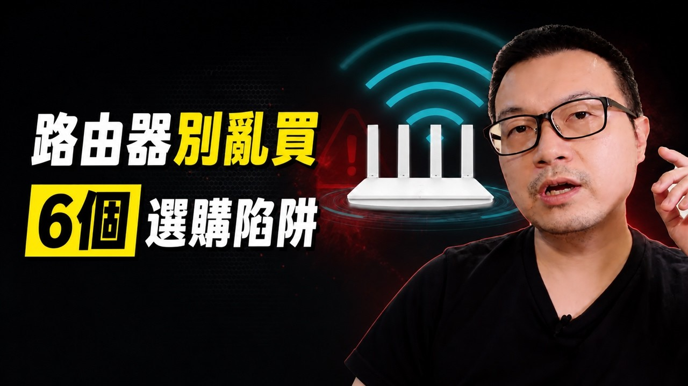

大家最常看的科技問題
頻道熱門影片 TOP 10
從大家常看的影片開始，把觀念整理成能回來查的文章。
依 Wilson說給你聽公開累積觀看次數排序，查核日 2026.11.13。比較一般影片、Shorts 與直播後，前十名皆為一般長片。觀看數會持續變動。
用接地氣的話說科技
大家最常看的科技問題
從大家常看的影片開始，把觀念整理成能回來查的文章。
依 Wilson說給你聽公開累積觀看次數排序，查核日 2026.11.13。比較一般影片、Shorts 與直播後，前十名皆為一般長片。觀看數會持續變動。